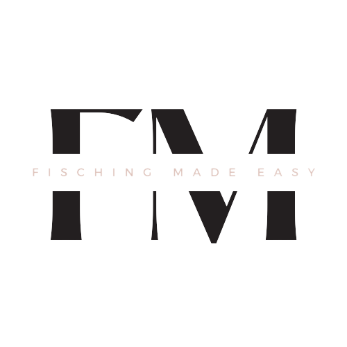

Wenn du den Fischer Job ausführen willst, verlierst du deinen
alten Job, sobald du auf "Weiter" klickst. (Fraktionen
entnommen)

Fisch Depot. Übersicht
Übersicht
Willkommen zu deiner Fisch Depot Übersicht. Drücke auf den
unteren Knopf um die Fischer spots markiert zu bekommen! Du
musst nicht immer hier her kommen um zu fischen